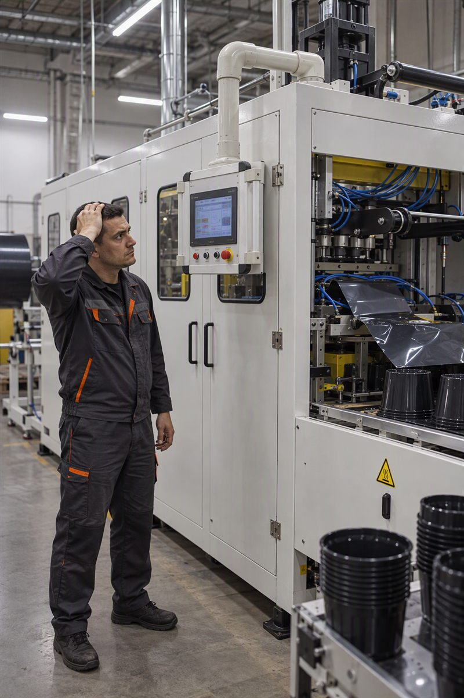
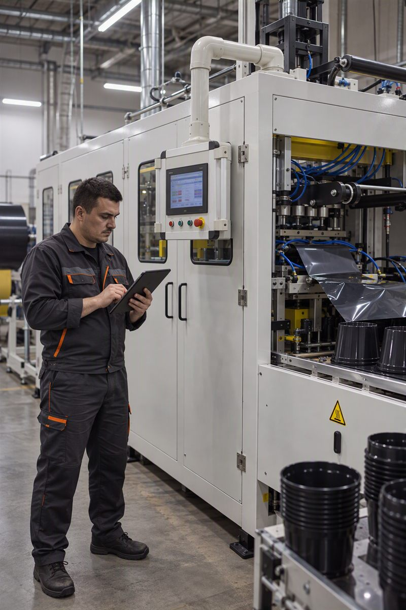
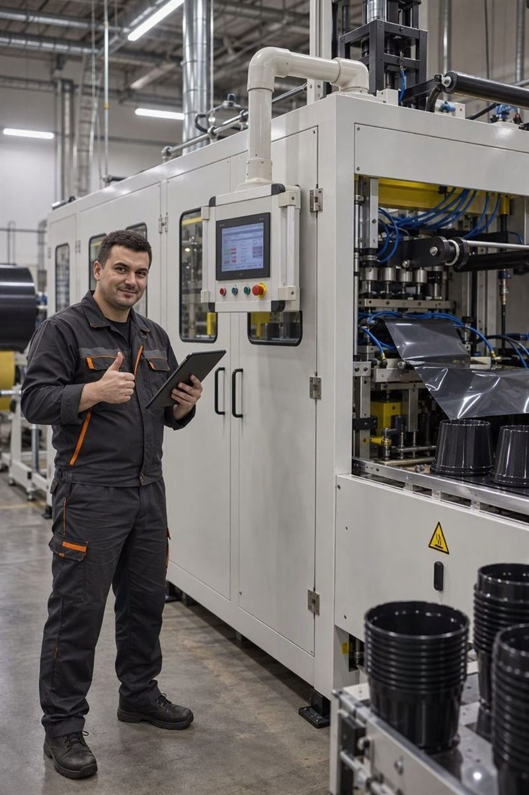

Журнал смены
Поломки на производстве — не редкость
Станок встал, и полдня непонятно почему — так проходит смена за сменой на любом производстве. Где-то это износ детали, где-то ошибка оператора, где-то просто разболтался крепёж. Поломки — это не ЧП, это фон, с которым работает каждая смена.
Проблема не в самих поломках — они будут всегда. Проблема в том, что через неделю никто не вспомнит, какой узел ломается чаще других и сколько смен на этом потеряно.

Простои — вы вообще где-то их записываете?
Часто ведётся только журнал объёма продукции. Что стояло, почему и на сколько — теряется за смену и всплывает, только когда кто-то спросит «а что случилось на прошлой неделе».
Мастер по памяти назовёт две-три частые причины, но точных цифр не даст — простои никто специально не считает, потому что делать это неудобно и долго.
Как это работает
Три касания на планшете: какое оборудование, что случилось, износ это или человеческий фактор — и сколько длилось. Запись постфактум, одним заходом.
Фиксация происходит прямо у станка, пока событие ещё в памяти, а не восстанавливается вечером по памяти или с чужих слов.

Почему это устойчиво
Инструмент приживается, только если не создаёт лишней работы и не зависит от чужой инфраструктуры. Здесь это заложено с самого начала, а не добавлено поверх.
- Один планшет на смену — не приложение, которое каждому оператору нужно ставить себе на телефон.
- Данные остаются на месте: без облака, без аккаунтов и без согласований с ИТ-отделом.
- Список причин простоя не придуман заранее за столом — он вырастает из того, что мастера реально отмечают на практике.

Хотите попробовать на своей смене?
Оставьте, как с вами связаться — вышлю минимальную версию, когда она будет готова к показу.
Если письмо не открылось — напишите на myrdoc911@gmail.com.